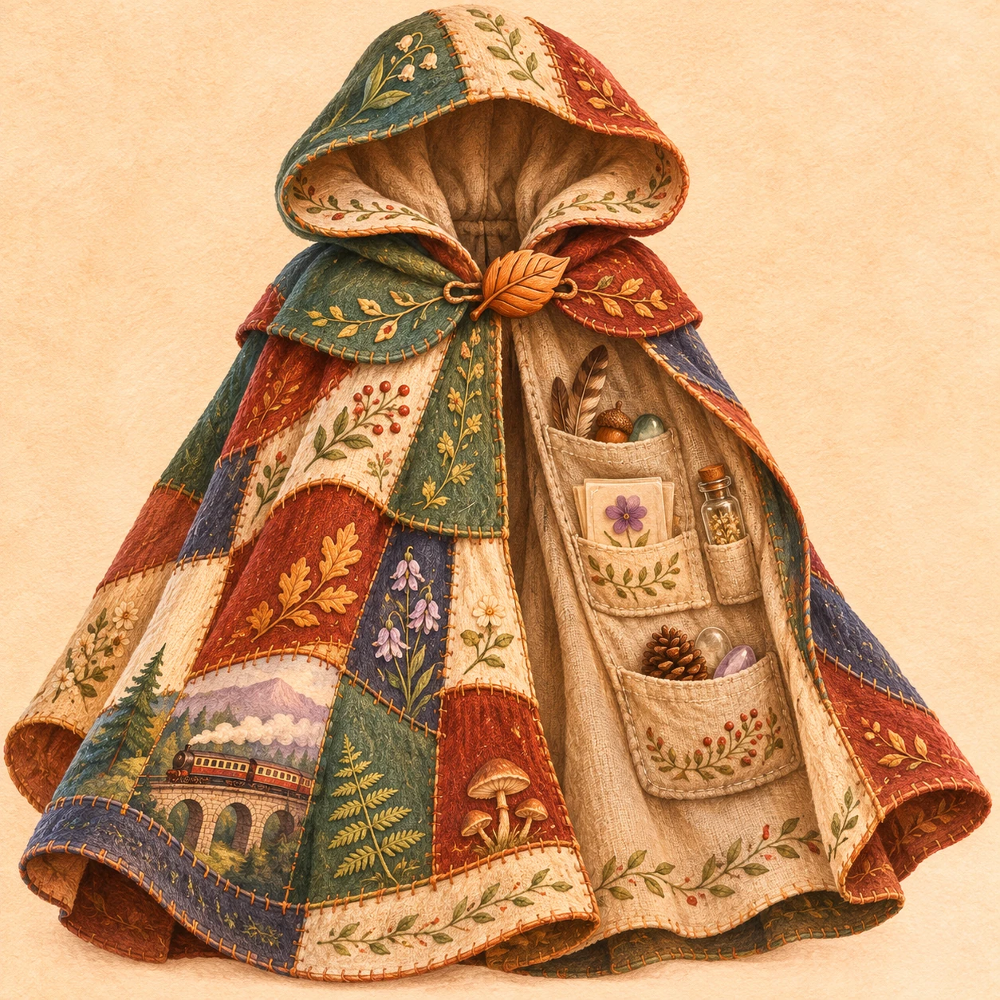

Вещь с историей
Плащ общих заплаток
Уютный плащ из зелёных, кремовых, рыжих и синих лоскутов с деревянной застёжкой-листом.
Согревает в рассказе, служит ширмой или подстилкой; каждый желающий может добавить памятный стежок.

Уютный плащ из зелёных, кремовых, рыжих и синих лоскутов с деревянной застёжкой-листом.
Согревает в рассказе, служит ширмой или подстилкой; каждый желающий может добавить памятный стежок.